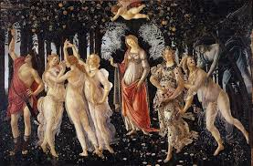
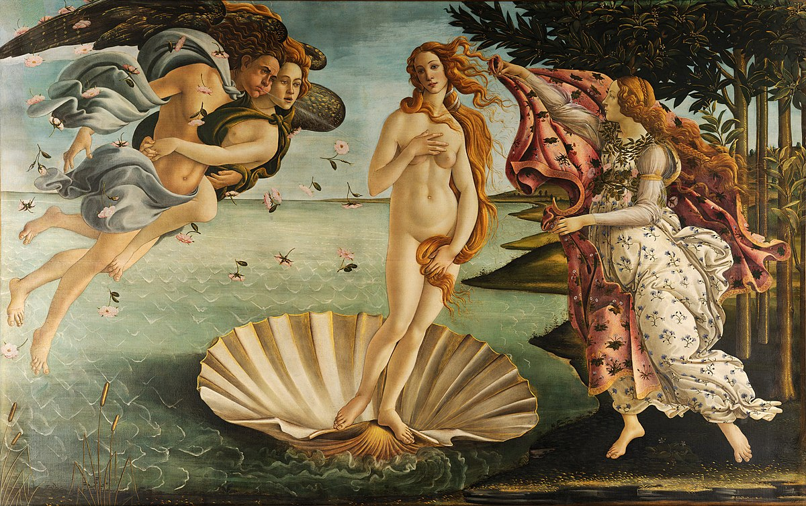
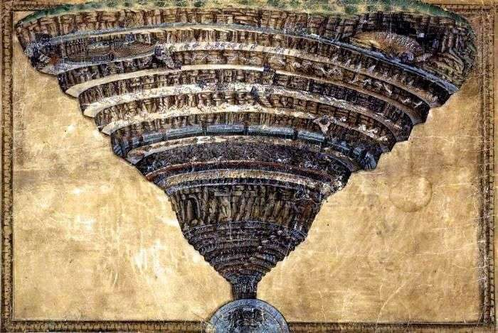
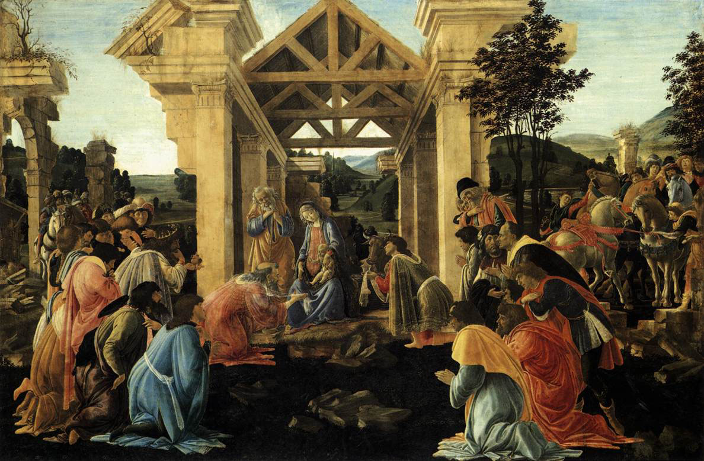
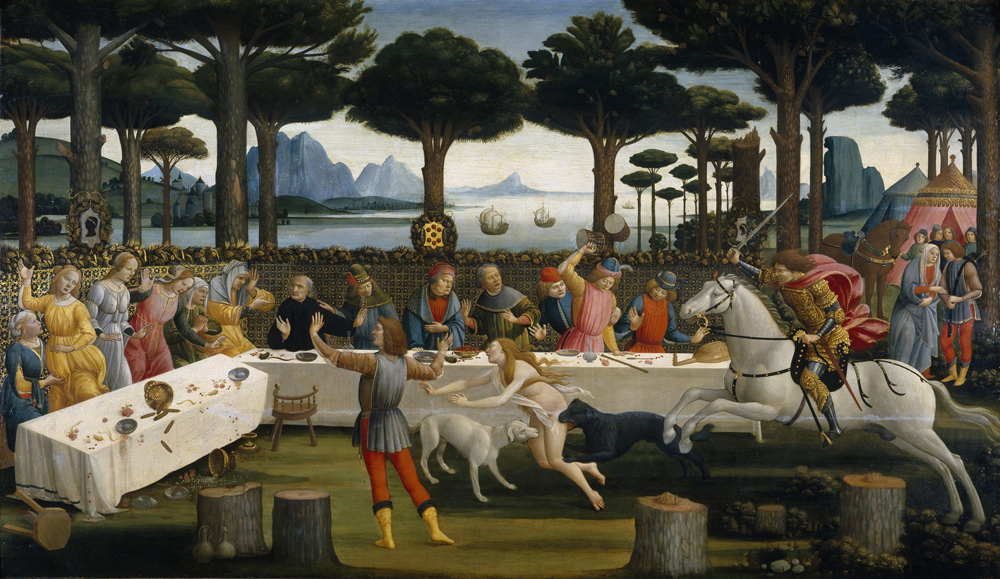

Volver a inicio
𝕊𝕒𝕟𝕕𝕣𝕠 𝔹𝕠𝕥𝕥𝕚𝕔𝕖𝕝𝕝𝕚

Biografia
La trayectoria artística de Sandro Botticelli se inició con obras de temática religiosa, en particular con vírgenes que, como la Virgen del Rosal, denotan un gran vigor compositivo. En 1470, cuando contaba ya con un taller propio, se introdujo en el círculo de los Médicis, para los que realizó sus obras más famosas. Un primo de Lorenzo el Magnífico, Pier Francesco de Médicis, le encargó la alegoría de La primavera y también, al parecer, El nacimiento de Venus y Palas y el centauro.
Realizar obras de gran formato ajenas a la temática religiosa fue toda una novedad en aquella época, y se debió seguramente a la vinculación de su mecenas con la filosofía neoplatónica, cuyo carácter simbólico debían reproducir las obras encargadas. De ellas se han realizado interpretaciones de enorme complejidad, que van mucho más allá de su gracia evocadora.
A la misma época corresponden también La adoración de los Reyes Magos y el Díptico de Judit, obras igualmente emblemáticas. El hecho de que, en 1481, fuera llamado a Roma para decorar al fresco la Capilla Sixtina (junto con otros tres grandes maestros) hace suponer que ya gozaba de un gran prestigio. A su regreso a Florencia realizó obras más solemnes y redundantes, como la Natividad mística, probablemente influido por la predicación tremendista de Girolamo Savonarola. Se le deben también bellísimos dibujos para un manuscrito de la Divina Comedia de Dante.
Eclipsado por las grandes figuras del siglo XVI italiano (Leonardo, Miguel Ángel y Rafael), Botticelli permaneció ignorado durante siglos, hasta la recuperación de su figura y su obra a mediados del siglo XIX. Su estilo se perpetuó en cierto modo a través de los artistas formados en su taller, entre ellos el hijo de Filippo Lippi, Filippino Lippi.
Obras de Sandro Botticelli

La Primavera |

El Nacimiento de Venus |

El Infierno de Dante |

Adoracion de los Reyes Magos |

Escena tercera de la obra Nastagio |
|